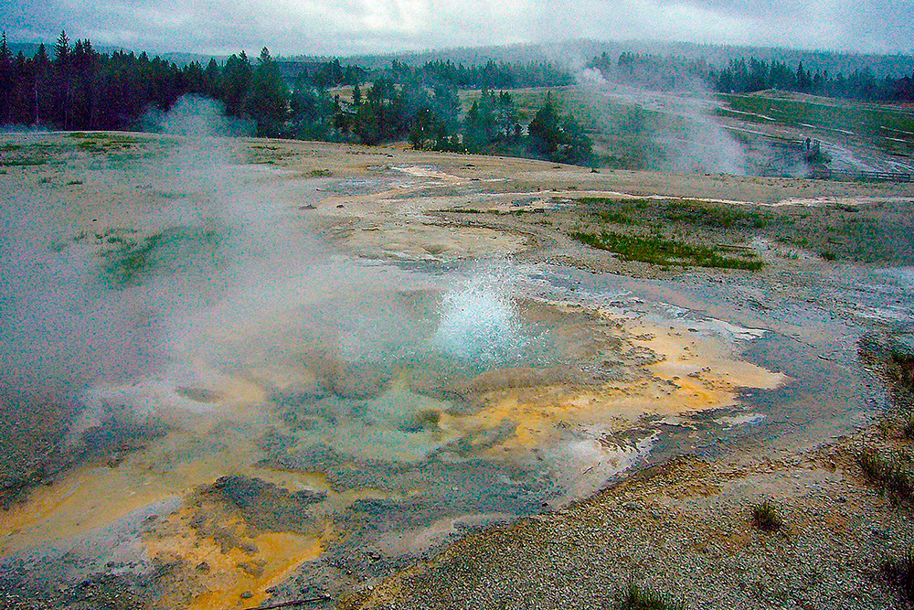

The vast natural forest of Yellowstone National Park covers nearly 9,000 km2 ; 96% of the park lies in Wyoming, 3% in Montana and 1% in Idaho. Yellowstone contains half of all the world's known geothermal features, with more than 10,000 examples. It also has the world's largest concentration of geysers (more than 300 geyers, or two thirds of all those on the planet). Established in 1872, Yellowstone is equally known for its wildlife, such as grizzly bears, wolves, bison and wapitis.

Yellowstone National Park is a protected area showcasing significant geological phenomena and processes. It is also a unique manifestation of geothermal forces, natural beauty, and wild ecosystems where rare and endangered species thrive. As the site of one of the few remaining intact large ecosystems in the northern temperate zone of earth, Yellowstone’s ecological communities provide unparalleled opportunities for conservation, study, and enjoyment of large-scale wildland ecosystem processes.